Che cosa è DicOOo ?
DicOOo è un assistente software che permette un'installazione facile dei dizionari (correttore ortografico, sillabazione e dizionario dei sinonimi) per gli utenti.
Questo software utilizza una macro scritto in ooBasic e si collega al server web e fornisce una lista di tutti i dizionari disponibili.
Questo prodotto è stato creato da Laurent Godard, un consulente indipendente (consulenza e sviluppo) su OpenOffice.
Come DicOOo funziona?
La macro prima vi pone alcune domande e successivamente si collega ad un server web OpenOffice.org per visualizzare un elenco di dizionari disponibili (correttore ortografico, sillabazione e dizionario dei sinonimi). Una volta che avete scelto la vostra lingua, DicOOo li scarica e li installa. Può essere richiesto, se necessario, di configurare i parametri linguistici.
Caratteristiche Principali
-
Multi-OS: Disponibile per Windows, Linux, Mac, Solaris
-
Multi-versione: compatibile con tutte le versioni di Oo
-
Multilingue: la lingua dell'interfaccia utente può essere cambiata. La prima versione è disponibile in 10 lingue
-
Modalità di installazione server: scelta tra installazione root (dizionari possono essere utilizzati da tutti gli utenti) o una installazione singolo utente
-
Auto-aggiornamento: Ogni volta che è utilizzato. DicOOo controlla la disponibilità di una nuova versione e permette all'utente di installarla
-
Gestisce installazione non in linea utilizzando pacchetti linguistici. Questi pacchetti sono disponibili sul server web del progetto Lingucomponent.
-
Licenza LGPL, autore: Laurent Godard
Utilizzare DicOOo
Per avviare DicOOo, selezionare dal menu File -> Procedure guidate -> Installa nuovi dizionari ...
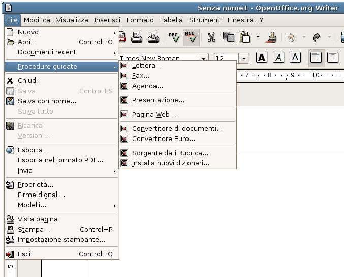
E' possibile scaricare DicOOo e poi aprire Dicooo.sxw ed accettare l'utilizzo della macro.
All'avvio, questa pagina viene visualizzata :
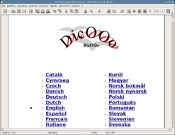
Selezionando una delle lingue, la pagina con la lingua selezionata viene visualizzata come in una pagina HTML. Nell'immagine qui sotto, in italiano:
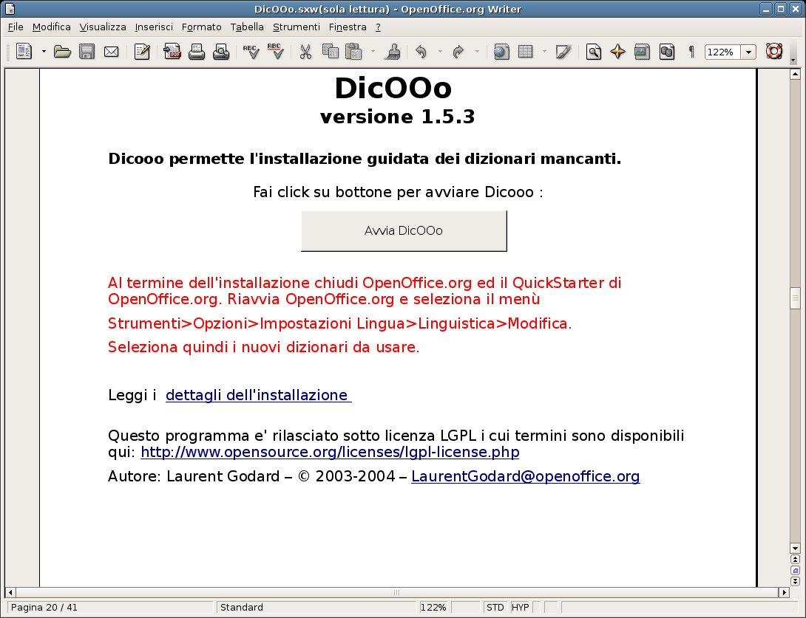
La macro sta funzionando correttamente e la pagina visualizza la schermata qui sopra. Da questa finestra, questa guida spiegherà il processo di installazione passo per passo.
Installazione passo per passo
1) Selezionare la modalità di aggiornamento
Avete quattro scelte:
-
Io sono collegato ad Internet, lo scarico direttamente e:
-
Io voglio installare i dizionari solo per me.
-
Io sono l'utente root e voglio installare i dizionari per tutti gli utenti.
-
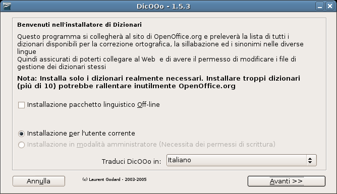
-
Io non sono collegato ad Internet, ho scaricato il pacchetto e:
-
Io voglio installarlo solo per me.
-
Io sono l'utente root e voglio installarlo per tutti gli utenti.
-
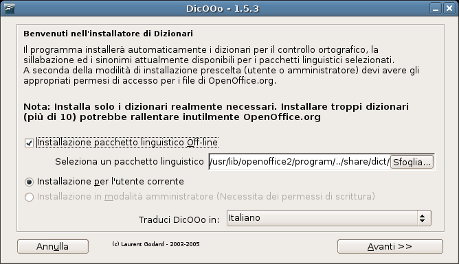
In questo caso, è possibile, una volta prelevato il pacchetto linguistico italiano con la versione più aggiornata dei dizionari, premere sul pulsante Sfoglia, selezionare il file del pacchetto linguistico, e procedere con l'installazione del pacchetto linguistico stesso.
Nel seguente esempio, io ho accesso ad Internet ed sono l'utente root. Voglio installare tutti i dizionari per tutti gli utenti.
2) Selezionare il dizionario principale
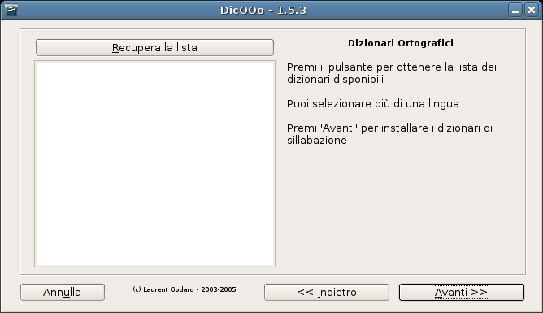
Dovete scegliere almeno un dizionario, potete sceglierne più di uno se desiderate.
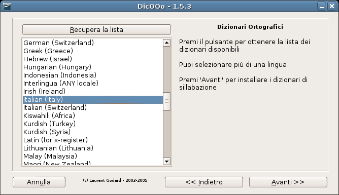
Qui, scegliamo il dizionario italiano (Italian (Italy)), procediamo nello stesso modo anche con il dizionario per la sillabazione, così il prossimo passo è...
3) Selezionare il dizionario di sillabazione
Fare clic su “Recupera la lista”.
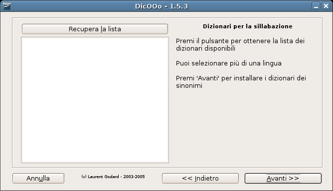
Selezionare il dizionario dalla lista.
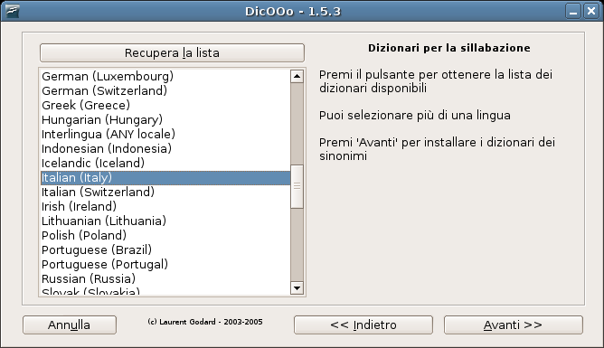
Ora, fate clic su “Avanti” per selezionare il dizionario dei sinonimi.
4) Selezionare il dizionario dei sinonimi
Come per gli altri dizionari, fate clic su "Recupera la lista".
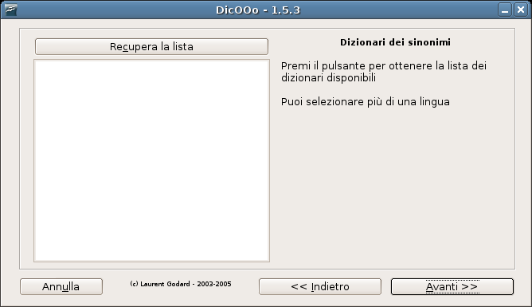
Selezionate il dizionario dalla lista.
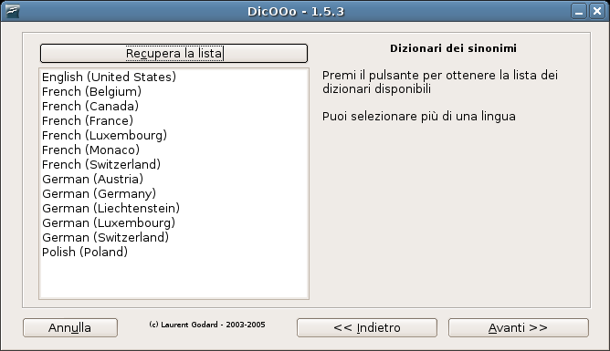
5) Passo finale
Questo è tutto! La macro adesso inizierà a scaricare ed installare i dizionari selezionati.
L'installazione è ora completa. potete ora visualizzare i file leggimi dei dizionari facendo clic su "Leggi le informazioni per ogni dizionario installato" (autori, licenze, informazioni di installazione, ecc ...).
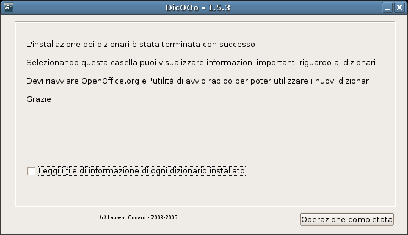
© 2003 - Autore: Stéphane Purnelle - Tradotto in Inglese : Yves Jacolin e Derek Torres
© 2005 - Tradotto ed adattato in Italiano : Andrea Sanavia